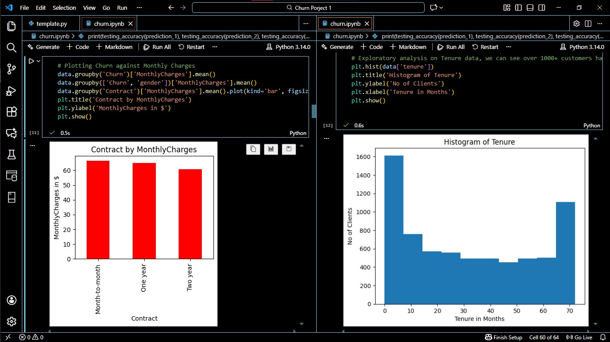
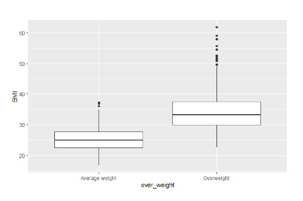
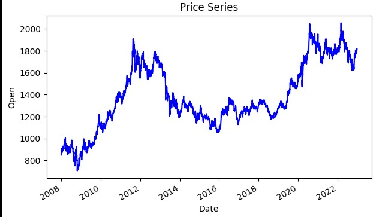

Patient No-Show Prediction


Analyzed 110K+ medical appointments to predict patient no-shows. Uncovered key drivers: wait times (30+ days → 35% no-show), age, and socioeconomic factors. 5 ML models with 79.6% accuracy.
IBM Certified Data Analyst with 4 years of experience in SQL, Python, R, and Power BI.
Building predictive models and interactive dashboards that drive business decisions.
Analyzed 110K+ medical appointments to predict patient no-shows. Uncovered key drivers: wait times (30+ days → 35% no-show), age, and socioeconomic factors. 5 ML models with 79.6% accuracy.
Interactive Power BI dashboard tracking patient admissions, discharges, bed occupancy, and departmental performance. Heatmaps, trends, and slicers for hospital administrators.
Power BI dashboard analyzing healthcare financial performance: £3.36M billing, top revenue drivers (X‑Ray 31%, CT Scan 24%), and patient out‑of‑pocket costs.

Impact of Nigeria's monetary policy on Ibadan housing—CRR drives 2‑bedroom prices, MPR drives 3‑bedroom prices. Segmented market response via SPSS.

K‑Means and Hierarchical clustering on 10,000 customers, identifying 5 distinct high‑value segments for targeted marketing.

End‑to‑end ML system with Streamlit to predict customer churn, featuring interactive visualizations.

Three hypothesis tests to validate patterns in healthcare data using R.

Stock price prediction using historical data with 90% forecast accuracy.